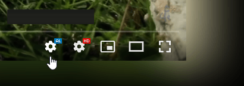

Ambient light for YouTube™
The settings are accessible from video player: 
I see no settings button
Please refresh the webpage in the browser.
If after the refresh the settings button is still not shown you can open your browser's console (Press F12) to search for any errors or warnings and report those by:
creating an issue or filling out the feedback form
Fix performance issues
Follow the troubleshoot guide to resolve performance issues
Support me

Import / Export settings
File storage
Cloud storage (Your browser account)
Crash reports & Privacy
A crash report contains only anonymous data and will be deleted after 30 days. However, anonymous data is still your data. That's why you can control what it contains via the settings below.
A crash report is allowed to contain:
No crash reports will be sent when all checkboxes are unchecked.
Our privacy policy